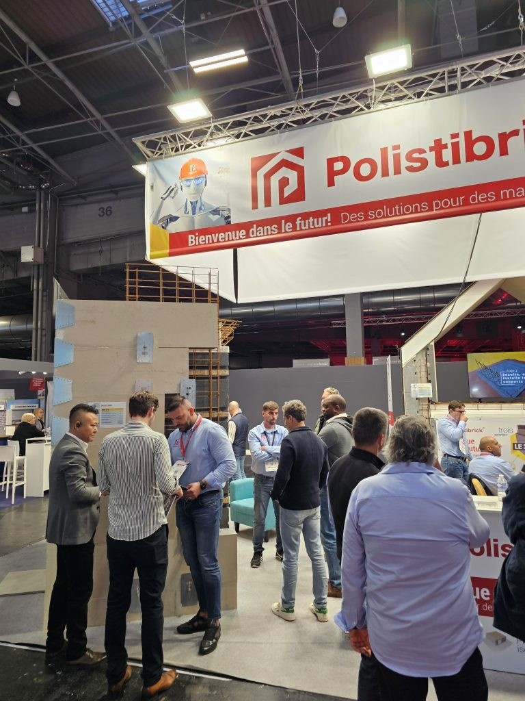

Polistibrick a participé à BATIMAT 2025, organisé à Paris Expo Porte de Versailles. Cette présence a souligné notre engagement à introduire sur le marché européen des solutions de construction innovantes et durables.
Présentations techniques et démonstrations
Sur notre stand, nous avons présenté les panneaux modulaires Polistibrick, mettant en avant :
• Efficacité énergétique avancée : nos systèmes offrent une isolation thermique supérieure, contribuant à réduire la consommation d’énergie des bâtiments.
• Durabilité et résistance : les matériaux utilisés assurent une grande résistance structurelle et une longue durée de vie.
• Montage rapide et précis : le design modulaire permet un assemblage efficace, réduisant considérablement le temps de construction.
Intérêt et collaborations
Notre participation a suscité l’intérêt des spécialistes et entrepreneurs du bâtiment, ouvrant des perspectives de collaborations futures et d’intégration de la technologie Polistibrick dans des projets européens.
Engagement pour l’avenir
Notre présence à BATIMAT 2025 reflète la volonté de Polistibrick de fournir des solutions de construction répondant aux exigences actuelles de durabilité et d’efficacité, renforçant ainsi notre position sur le marché international.
Polistibrick – Construisons un avenir efficace et durable.
